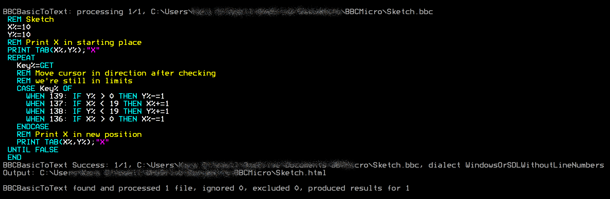
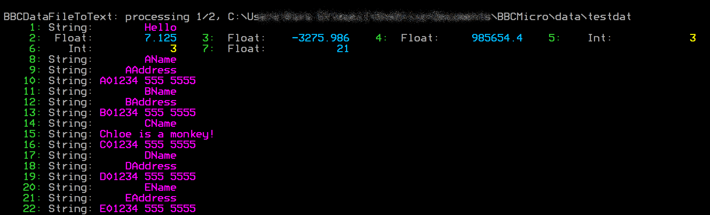
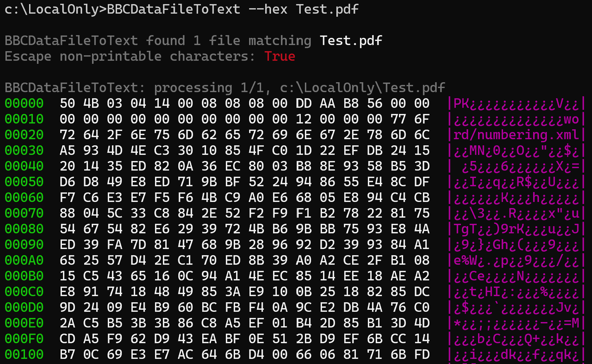
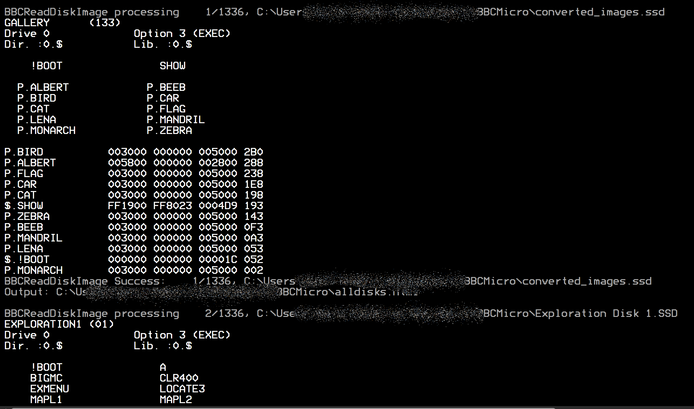

BeebFileUtilities
The app can be installed from:
Requires Windows 10 (build 1809) or later, or Windows 11.
Command-line tools for viewing BBC Micro files and disk images
Windows Command Line Microsoft Store BBC Micro FreeI recently got round to repairing and re-capping the power supply in my BBC Micro Model B, which I bought 40 years ago. Of course I started grabbing various programs and data from it, transferring to my Windows PC as .dsd files, then using those with BeebEm, and I bought a copy of BBC BASIC for Windows so that I could play with that too. I wanted some command-line utilities to display the content of .dsd files, and decode BBC BASIC files along with "PRINT#"-type BBC data files, so I wrote them as console commands. The utilities are:
PRINT# type data files as plaintext, HTML, or BBCode.*CAT-style output of .DSD or .SSD disk images, with the ability to export files individually and dump sectors.The most up to date version of this information will always be the online version.
This utility displays a tokenized, binary BBC Micro BASIC file as text, HTML, or BBCode for bulletin board posts. If there is "hidden data" after the BASIC program, that will be displayed in hex, as will control characters.

Here's an example of HTML output using the Sketch program from bbcbasic.co.uk as input, saved on the PC in BBC BASIC tokenised binary as Sketch.bbc:
C:\...\WelcomeDiskFiles> bbcbasictotext Sketch.bbc Sketch.html BBCBasicToText found 1 file matching Sketch.bbc Escape non-printable characters: True BBCBasicToText: processing 1/1, C:\Users\...\BBCMicro\Sketch.bbc BBCBasicToText Success: 1/1, C:\Users\...\BBCMicro\Sketch.bbc, dialect WindowsOrSDLWithoutLineNumbers Output: C:\Users\...\BBCMicro\Sketch.html BBCBasicToText found and processed 1 file, ignored 0, excluded 0, produced results for 1
X%=10 Y%=10 REM Print X in starting place PRINT TAB(X%,Y%);"X" REPEAT Key%=GET REM Move cursor in direction after checking REM we're still in limits CASE Key% OF WHEN 139: IF Y% > 0 THEN Y%-=1 WHEN 137: IF X% < 19 THEN X%+=1 WHEN 138: IF Y% < 19 THEN Y%+=1 WHEN 136: IF X% > 0 THEN X%-=1 ENDCASE REM Print X in new position PRINT TAB(X%,Y%);"X" UNTIL FALSE END
It tries to detect the indentation style automatically based on whether the file is an Acorn format BASIC file or
BBC BASIC for Windows/SDL, but you can override this with the /w or --windows-style-indent
switches. Indentation is applied to FOR, REPEAT,
WHILE, and CASE, and it respects
EXIT REPEAT etc. You can turn indentation off entirely with --noindent.
I extracted the program from the Welcome disk using:
C:\...\WelcomeDiskFiles> bbcreaddiskimage Welcome.ssd --export=*welcome*
then converted it to BBCode using:
C:\...\WelcomeDiskFiles> bbcbasictotext 0_W.WELCOME *.bbcode /w BBCBasicToText found 1 file matching 0_W.WELCOME Escape non-printable characters: True BBCBasicToText: processing 1/1, C:\...\WelcomeDiskFiles\0_W.WELCOME BBCBasicToText Success: 1/1, C:\...\WelcomeDiskFiles\0_W.WELCOME Output: C:\...\WelcomeDiskFiles\0_W.WELCOME.bbcode
This produced:
10 REM New version of 'INTRO' from 20 REM Welcome pack 30 REM By John Coll & Andrew Gordon 40 ON ERROR GOTO 630 50 ENVELOPE 1,1,-RND(50),-RND(50),-RND(45),255,255,255,127,0,0,-127,127,0 60 SOUND 1,1,255,255 70 DIM COM%11 80 M0=650:M1=500:M2=708:M3=104:M4=288:M5=550:M6=720:M7=450:M8=5 90 MODE5 100 VDU5 110 VDU23,255,255,255,255,255,255,255,255,255 120 GCOL0,135 130 CLG 140 VDU18,0,129,24,128;128;1152;896;16,18,0,135,24,256;256;1024;768;16,26 150 FORI%=M1 TO M2 STEP M3:PROCSWOOSH(M0):PROCLETTER:NEXT 160 $COM%="DISC SYSTEM" [Snip rest of "Welcome" BASIC program]
Show BBC PRINT#-type data files as text, HTML, or BBCode, with hex and ASCII dump options.

This can actually be used as a "hex dump" program for any PC file. I have
defined in my command terminals for that reason.
> hex binaryfile.bin binaryfile.bbcode BBCDataFileToText: processing 1/1, C:\Users\...\binaryfile.bin 000000 89 50 4E 47 0D 0A 1A 0A 00 00 00 0D 49 48 44 52 00 00 09 1F 00 00 07 3F 08 06 00 00 00 A6 E8 13 000020 04 00 00 00 01 73 52 47 42 00 AE CE 1C E9 00 00 00 04 67 41 4D 41 00 00 B1 8F 0B FC 61 05 00 00 000040 00 09 70 48 59 73 00 00 24 E8 00 00 24 E8 01 82 63 05 1C 00 00 FF A5 49 44 41 54 78 5E EC FD 0B ... 052040 48 E4 23 00 00 00 00 00 00 00 00 20 91 8F 00 00 00 00 00 00 00 00 80 60 3B 5C 38 F0 C2 B6 D2 6F 052060 73 00 00 00 00 49 45 4E 44 AE 42 60 82 BBCDataFileToText Informational: 1/1, binaryfile.bin is not BBC BASIC PRINT# data file. Output: C:\Users\...\binaryfile.bbcode BBCDataFileToText found and processed 1 file, ignored 0, excluded 0, produced results for 1
The BBCDataFileToText utility makes a handy, general-purpose "hex dump" program. For example, if you enter
BBCDataFileToText --hex Test.pdf*
you will see output similar to that shown below

Display *CAT-style output of .SSD or .DSD disk images, with the ability to export files individually and dump raw sectors.

All three can produce colour output — strings, keywords, and the like are each coloured differently — writing plain text (in colour when sent to a command-prompt window), BBCode, or HTML, and can optionally launch your browser for the HTML. They understand wildcards and dive recursively through your folders, so you can convert a whole shoebox of discs in one go. Four decades on, your Acorn archive has never looked this good!
All three utilities run from a Command Prompt or PowerShell. For example, from a Command Prompt:
BBCBasicToText "%OneDrive%\Documents\BBCMicro\ARRAYLENSUM.bbc"
BBCDataFileToText "%OneDrive%\Documents\BBCMicro\NAMES"
BBCReadDiskImage "%OneDrive%\Documents\BBCMicro\Games.dsd"
In PowerShell, use $env:OneDrive in place of %OneDrive%.
BBCReadDiskImage "$env:OneDrive\Documents\BBCMicro\Games.dsd"
Because typing the full command names is tedious, you can create DOSKEY macros in a command file named cmdsetup.cmd:
To run this automatically in every new command window, add the following to the registry by saving it in a file of type .reg and double-clicking it. Always be careful adding .reg files unless you trust their source and know what you are doing - it can be a security risk.
Display a tokenised, binary BBC Micro BASIC file as text, HTML, or bbcode.
Show BBC PRINT# type data files as text, HTML, or bbcode.
Display *CAT-style output of .DSD or .SSD disk images, with the ability to export files individually and dump sectors.
Macros can be added automatically to every new command window.
The app can be installed from:
Requires Windows 10 (build 1809) or later, or Windows 11.
You can find my contact details via my PGP key on the KLO Software page.
BBC Micro Utilities is free software.
← Back to KLO Software